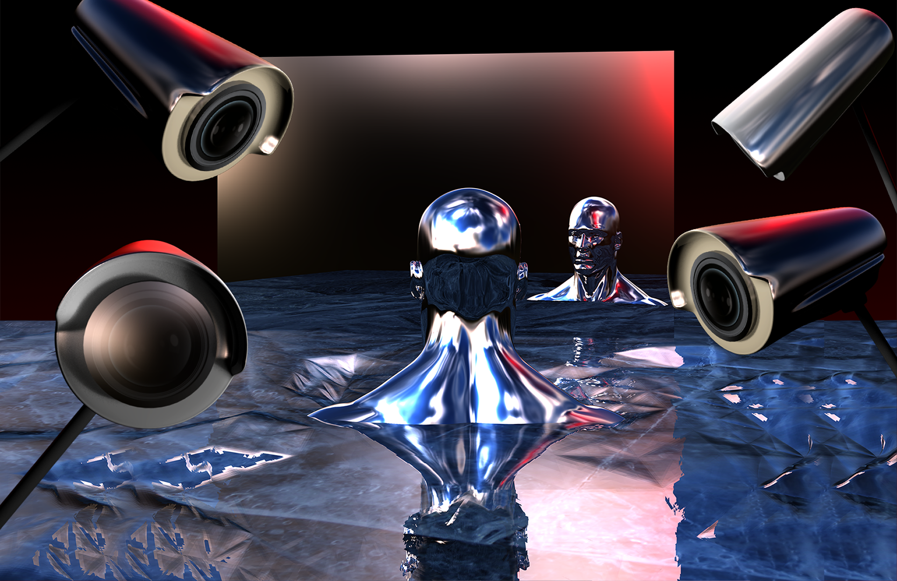
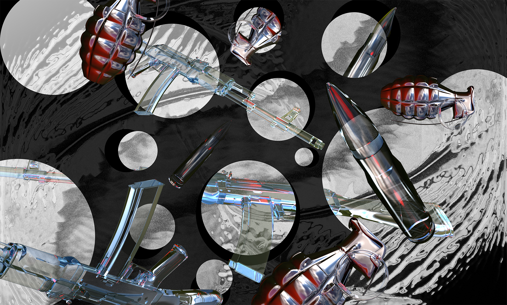

IT Inferno - Wi-Fi In Hell Works Really Well
In Hell Wi-Fi Works Really Well is a visual-interactive narrative that takes us through the nine circles of technological hell, a modern interpretation of those found in the Divine Comedy by Dante Alighieri. It is a post-Internet installation, that uses modern web tools and 3D graphics to tell a visual story through the frame of a web browser. The installation was on display offline during an exhibition at University of Ljubljana in May 2016.
Made in collaboration with Luka Grčar
Roles
Creative & Art Direction, Graphic Design, 3D Rendering, Coding
Creative & Art Direction, Graphic Design, 3D Rendering, Coding


